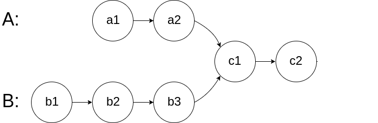
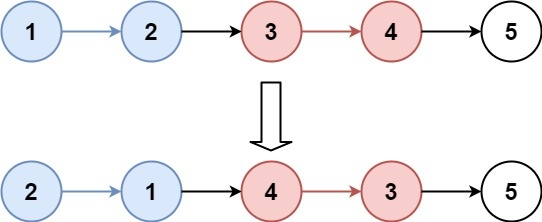
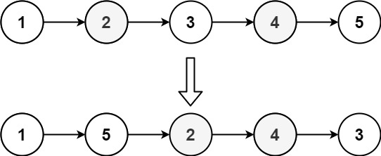

环形链表
给定一个链表的头节点 head ，返回链表开始入环的第一个节点。 如果链表无环，则返回 null。
如果链表中有某个节点，可以通过连续跟踪 next 指针再次到达，则链表中存在环。 为了表示给定链表中的环，评测系统内部使用整数 pos 来表示链表尾连接到链表中的位置（索引从 0 开始）。如果 pos 是 -1，则在该链表中没有环。注意：pos 不作为参数进行传递，仅仅是为了标识链表的实际情况。
不允许修改 链表。
输入：head = [3,2,0,-4], pos = 1
输出：返回索引为 1 的链表节点
解释：链表中有一个环，其尾部连接到第二个节点。
解答
- 首选快慢指针slow和fast，如果二者相遇了，说明有环
- 有环的前提下才能找到环的入口，如果没有环就返回空
- 只有一个节点没有办法成为环
- 用slow和fast在环内相遇后，再用head继续向后走，相遇后即可返回
func detectCycle(head *ListNode) *ListNode {
fast, slow := head, head
for fast != nil && fast.Next != nil {
fast = fast.Next.Next
slow = slow.Next
if fast == slow {
break
}
}
if fast == nil && fast.Next == nil {
return nil
}
slow = head
for slow != fast {
slow = slow.Next
fast = fast.Next
}
return slow
}
func detectCycle(head *ListNode) *ListNode {
fast, slow := head, head
for fast != nil && fast.Next != nil {
fast = fast.Next.Next
slow = slow.Next
if fast == slow {
for fast != head {
fast = fast.Next
head = head.Next
}
return fast
}
}
return nil
}
相交链表
给你输入两个链表的头结点 headA 和 headB，这两个链表可能存在相交。
如果相交，你的算法应该返回相交的那个节点；如果没相交，则返回 null。
比如题目给我们举的例子，如果输入的两个链表如下图：

解答
由于两条链表的长度可能不同，两条链表之间的节点无法对应：
如果用两个指针 p1 和 p2 分别在两条链表上前进，并不能同时走到公共节点，也就无法得到相交节点 c1。
解决这个问题的关键是，通过某些方式，让 p1 和 p2 能够同时到达相交节点 c1。
所以，我们可以让 p1 遍历完链表 A 之后开始遍历链表 B，让 p2 遍历完链表 B 之后开始遍历链表 A，这样相当于「逻辑上」两条链表接在了一起。
如果这样进行拼接，就可以让 p1 和 p2 同时进入公共部分，也就是同时到达相交节点 c1：
func getIntersectionNode(headA, headB *ListNode) *ListNode {
p1, p2 := headA, headB
for p1 != p2 {
if p1 == nil {
p1 = headB
} else {
p1 = p1.Next
}
if p2 == nil {
p2 = headA
} else {
p2 = p2.Next
}
}
return p1
}
合并两个有序链表
将两个升序链表合并为一个新的 升序 链表并返回。新链表是通过拼接给定的两个链表的所有节点组成的。
输入：l1 = [1,2,4], l2 = [1,3,4]
输出：[1,1,2,3,4,4]
示例 2：
输入：l1 = [], l2 = []
输出：[]
示例 3：
输入：l1 = [], l2 = [0]
输出：[0]
提示：
两个链表的节点数目范围是 [0, 50]
-100 <= Node.val <= 100
l1 和 l2 均按 非递减顺序 排列
func mergeTwoLists(list1 *ListNode, list2 *ListNode) *ListNode {
dummyNode := &ListNode{Next: nil}
p, p1, p2 := dummyNode, list1, list2
for p1 != nil && p2 != nil {
if p1.Val >= p2.Val {
p.Next = p2
p2 = p2.Next
} else {
p.Next = p1
p1 = p1.Next
}
p = p.Next
}
if p1 != nil {
p.Next = p1
}
if p2 != nil {
p.Next = p2
}
return dummyNode.Next
}
分隔链表
给你一个链表的头节点 head 和一个特定值 x ，请你对链表进行分隔，使得所有 小于 x 的节点都出现在 大于或等于 x 的节点之前。
你应当 保留 两个分区中每个节点的初始相对位置。
输入：head = [1,4,3,2,5,2], x = 3
输出：[1,2,2,4,3,5]
示例 2：
输入：head = [2,1], x = 2
输出：[1,2]
提示：
链表中节点的数目在范围 [0, 200] 内
-100 <= Node.val <= 100
-200 <= x <= 200
解答
在合并两个有序链表时让你合二为一，而这里需要分解让你把原链表一分为二。具体来说，我们可以把原链表分成两个小链表，一个链表中的元素大小都小于 x，另一个链表中的元素都大于等于 x
func partition(head *ListNode, x int) *ListNode {
dummyNode1, dummyNode2 := &ListNode{}, &ListNode{}
p, p1, p2 := head, dummyNode1, dummyNode2
for p != nil {
if p.Val < x {
p1.Next = p
p1 = p1.Next
} else {
p2.Next = p
p2 = p2.Next
}
p = p.Next
}
//这里有环,必须断开
p2.Next = nil
p1.Next = dummyNode2.Next
return dummyNode1.Next
}
或者p = p.Next修改为
temp := p.Next
p.Next = nil
p = temp
否则有环
合并K个有序链表
给你一个链表数组，每个链表都已经按升序排列。
请你将所有链表合并到一个升序链表中，返回合并后的链表。
示例 1：
输入：lists = [[1,4,5],[1,3,4],[2,6]]
输出：[1,1,2,3,4,4,5,6]
解释：链表数组如下：
[
1->4->5,
1->3->4,
2->6
]
将它们合并到一个有序链表中得到。
1->1->2->3->4->4->5->6
示例 2：
输入：lists = []
输出：[]
示例 3：
输入：lists = [[]]
输出：[]
解答
- 合并 k 个有序链表的逻辑类似合并两个有序链表，难点在于，如何快速得到 k 个节点中的最小节点，接到结果链表上？
- 这里我们就要用到 优先级队列（二叉堆） 这种数据结构，把链表节点放入一个最小堆，就可以每次获得 k 个节点中的最小节点：
- 优先队列 pq 中的元素个数最多是 k，所以一次 poll 或者 add 方法的时间复杂度是 O(logk)；所有的链表节点都会被加入和弹出 pq，所以算法整体的时间复杂度是 O(Nlogk)，其中 k 是链表的条数，N 是这些链表的节点总数。
func mergeKLists(lists []*ListNode) *ListNode {
dummyNode := &ListNode{}
p := dummyNode
pq := make(PriorityQueue, 0)
heap.Init(&pq)
for _, val := range lists {
heap.Push(&pq, val)
}
for pq.Len() > 0 {
node := pq.Pop().(*ListNode)
p.Next = node
if node.Next != nil {
heap.Push(&pq, node.Next)
}
p = p.Next
}
return dummyNode.Next
}
type PriorityQueue []*ListNode
func (p PriorityQueue) Len() int {
return len(p)
}
func (p PriorityQueue) Less(i, j int) bool {
return p[i].Val < p[j].Val
}
func (p PriorityQueue) Swap(i, j int) {
p[i], p[j] = p[j], p[i]
}
func (p *PriorityQueue) Push(x interface{}) {
*p = append(*p, x.(*ListNode))
}
func (p *PriorityQueue) Pop() interface{} {
old, n := *p, len(*p)
x := old[n-1]
*p = old[:n-1]
return x
}
单链表的倒数第 k 个节点

// 返回链表的倒数第 k 个节点
func findFromEnd(head *ListNode, k int) *ListNode {
p1 := head
// p1 先走 k 步
for i := 0; i < k; i++ {
p1 = p1.Next
}
p2 := head
// p1 和 p2 同时走 n - k 步
for p1 != nil {
p1 = p1.Next
p2 = p2.Next
}
// p2 现在指向第 n - k + 1 个节点，即倒数第 k 个节点
return p2
}
19. 删除链表的倒数第 N 个结点
给你一个链表，删除链表的倒数第 n 个结点，并且返回链表的头结点。
输入：head = [1,2,3,4,5], n = 2
输出：[1,2,3,5]
示例 2：
输入：head = [1], n = 1
输出：[]
示例 3：
输入：head = [1,2], n = 1
输出：[1]
解答
- fast节点先走n+1步
- slow节点一直走，走到fast == nil
- 使用dummy节点辅助
- fast 和 slow都是从dummyNode开始
func removeNthFromEnd(head *ListNode, n int) *ListNode {
dummyNode := &ListNode{Next: head}
p1, p2 := dummyNode, dummyNode
for i := 0; i < n+1; i++ {
p1 = p1.Next
}
for p1 != nil {
p2 = p2.Next
p1 = p1.Next
}
p2.Next = p2.Next.Next
return dummyNode.Next
}
注意
使用了虚拟头结点的技巧，也是为了防止出现空指针的情况，比如说链表总共有 5 个节点，题目就让你删除倒数第 5 个节点，也就是第一个节点，那按照算法逻辑，应该首先找到倒数第 6 个节点。但第一个节点前面已经没有节点了，这就会出错。
两两交换链表中的节点
给定一个链表，两两交换其中相邻的节点，并返回交换后的链表。
你不能只是单纯的改变节点内部的值，而是需要实际的进行节点交换。
- 流程如下

- 使用p1 保存 1 的位置， p2 保存 3 的位置
- cur 每次移动 2 个位置
- cur = cur.Next.Next
func swapPairs(head *ListNode) *ListNode {
dummyNode := &ListNode{Next: head}
cur := dummyNode
for cur.Next != nil && cur.Next.Next != nil {
p1 := cur.Next
p2 := cur.Next.Next.Next
cur.Next = cur.Next.Next
cur.Next.Next = p1
p1.Next = p2
cur = cur.Next.Next
}
return dummyNode.Next
}
反转链表||
给你单链表的头指针 head 和两个整数 left 和 right ，其中 left <= right 。请你反转从位置 left 到位置 right 的链表节点，返回 反转后的链表 。
输入：head = [1,2,3,4,5], left = 2, right = 4
输出：[1,4,3,2,5]
解答
func reverseBetween(head *ListNode, left int, right int) *ListNode {
dummyNode := &ListNode{Next: head}
p1 := dummyNode
for i := 0; i < left-1; i++ {
p1 = p1.Next
}
pre, cur, cnt := p1.Next, p1.Next.Next, 0
for cnt < right-left {
pre.Next = cur.Next
cur.Next = p1.Next
p1.Next = cur
cur = pre.Next
cnt++
}
return dummyNode.Next
}
K个一组翻转链表
给你链表的头节点 head ，每 k 个节点一组进行翻转，请你返回修改后的链表。
k 是一个正整数，它的值小于或等于链表的长度。如果节点总数不是 k 的整数倍，那么请将最后剩余的节点保持原有顺序。
你不能只是单纯的改变节点内部的值，而是需要实际进行节点交换

输入：head = [1,2,3,4,5], k = 2
输出：[2,1,4,3,5]
输入：head = [1,2,3,4,5], k = 3
输出：[3,2,1,4,5]
提示：
链表中的节点数目为 n
1 <= k <= n <= 5000
0 <= Node.val <= 1000
解答方案
- 使用辅助节点dummyNode
- 用两个循环控制k个节点扭转
- 反转k个节点返回head,tail
- 注意不要落下cur指针的指向
func reverseKGroup(head *ListNode, k int) *ListNode {
dummyNode := &ListNode{Next: head}
cur, pre := dummyNode, dummyNode
for {
for i := 0; i < k && cur != nil; i++ {
cur = cur.Next
}
//剩余节点不足 k 个，直接退出
if cur == nil {
break
}
next := cur.Next
head, tail := reverse(pre.Next, k)
pre.Next = head
tail.Next = next
pre = tail
cur = tail
}
return dummyNode.Next
}
func reverse(node *ListNode, k int) (head, tail *ListNode) {
var pre *ListNode
cur := node
for k > 0 {
next := cur.Next
cur.Next = pre
pre = cur
cur = next
k--
}
return pre, node
}
两数相加
给你两个 非空 的链表，表示两个非负的整数。它们每位数字都是按照 逆序 的方式存储的，并且每个节点只能存储 一位 数字。
请你将两个数相加，并以相同形式返回一个表示和的链表。
你可以假设除了数字 0 之外，这两个数都不会以 0 开头。
输入：l1 = [2,4,3], l2 = [5,6,4]
输出：[7,0,8]
解释：342 + 465 = 807.
示例 2：
输入：l1 = [0], l2 = [0]
输出：[0]
示例 3：
输入：l1 = [9,9,9,9,9,9,9], l2 = [9,9,9,9]
输出：[8,9,9,9,0,0,0,1]
解答
func addTwoNumbers(l1 *ListNode, l2 *ListNode) *ListNode {
p1, p2, dummyNode := l1, l2, &ListNode{}
carry := 0
p := dummyNode
for p1 != nil || p2 != nil || carry > 0 {
val := carry
if p1 != nil {
val += p1.Val
p1 = p1.Next
}
if p2 != nil {
val += p2.Val
p2 = p2.Next
}
carry = val / 10
val = val % 10
p.Next = &ListNode{Val: val}
p = p.Next
}
return dummyNode.Next
}
两数相加
两数相加 II
给你两个 非空 链表来代表两个非负整数。数字最高位位于链表开始位置。它们的每个节点只存储一位数字。将这两数相加会返回一个新的链表。
你可以假设除了数字 0 之外，这两个数字都不会以零开头。
输入：l1 = [7,2,4,3], l2 = [5,6,4]
输出：[7,8,0,7]
示例2：
输入：l1 = [2,4,3], l2 = [5,6,4]
输出：[8,0,7]
示例3：
输入：l1 = [0], l2 = [0]
输出：[0]
解答
- 使用切片来模拟栈
- 计算的节点要用头插法放入结果链表中
func addTwoNumbers(l1 *ListNode, l2 *ListNode) *ListNode {
var st1, st2 []int
for l1 != nil {
st1 = append(st1, l1.Val)
l1 = l1.Next
}
for l2 != nil {
st2 = append(st2, l2.Val)
l2 = l2.Next
}
carry := 0
dummy := &ListNode{Next: nil}
for len(st1) > 0 || len(st2) > 0 || carry > 0 {
val := carry
if len(st1) > 0 {
val += st1[len(st1)-1]
st1 = st1[:len(st1)-1]
}
if len(st2) > 0 {
val += st2[len(st2)-1]
st2 = st2[:len(st2)-1]
}
carry = val / 10
val = val % 10
//注意不要写错，容易造成死循环
node := &ListNode{Next: dummy.Next, Val: val}
dummy.Next = node
}
return dummy.Next
}
删除链表的重复元素
给定一个已排序的链表的头 head ， 删除原始链表中所有重复数字的节点，只留下不同的数字 。返回 已排序的链表 。
输入：head = [1,2,3,3,4,4,5]
输出：[1,2,5]
输入：head = [1,1,1,2,3]
输出：[2,3]
解答
- 使用p = dummy节点作头节点
- 通过p.Next 和 p.Next.Next 来判断是否有相同节点
- 重复节点是全部删除，一个不留
func deleteDuplicates(head *ListNode) *ListNode {
dummy := &ListNode{Next: head}
p := dummy
for p.Next != nil && p.Next.Next != nil {
if p.Next.Val == p.Next.Next.Val {
val := p.Next.Val
for p.Next != nil && p.Next.Val == val {
p.Next = p.Next.Next
}
} else {
p = p.Next
}
}
return dummy.Next
}
从未排序的链表中移除重复元素
给定一个链表的第一个节点 head ，找到链表中所有出现多于一次的元素，并删除这些元素所在的节点。
返回删除后的链表。
输入: head = [1,2,3,2]
输出: [1,3]
解释: 2 在链表中出现了两次，所以所有的 2 都需要被删除。删除了所有的 2 之后，我们还剩下 [1,3] 。
输入: head = [2,1,1,2]
输出: []
解释: 2 和 1 都出现了两次。所有元素都需要被删除。
func deleteDuplicatesUnsorted(head *ListNode) *ListNode {
p := head
cnt := map[int]int{}
for p != nil {
cnt[p.Val]++
p = p.Next
}
dummy := &ListNode{Next: head}
p = dummy
for p.Next != nil {
if cnt[p.Next.Val] > 1 {
p.Next = p.Next.Next
} else {
p = p.Next
}
}
return dummy.Next
}
378. 有序矩阵中第 K 小的元素
给你一个 n x n 矩阵 matrix ，其中每行和每列元素均按升序排序，找到矩阵中第 k 小的元素。
请注意，它是 排序后 的第 k 小元素，而不是第 k 个 不同 的元素。
你必须找到一个内存复杂度优于 O(n2) 的解决方案。
示例 1：
输入：matrix = [[1,5,9],[10,11,13],[12,13,15]], k = 8
输出：13
解释：矩阵中的元素为 [1,5,9,10,11,12,13,13,15]，第 8 小元素是 13
示例 2：
输入：matrix = [[-5]], k = 1
输出：-5
解答
- 矩阵中的每一行都是排好序的，就好比多条有序链表，你用优先级队列施展合并多条有序链表的逻辑就能找到第 k 小的元素了
type Node struct {
val, row, col int
}
type InitHeap []*Node
func (p InitHeap) Len() int { return len(p) }
func (p InitHeap) Swap(i, j int) { p[i], p[j] = p[j], p[i] }
func (p InitHeap) Less(i, j int) bool { return p[i].val < p[j].val }
func (p *InitHeap) Push(x interface{}) { *p = append(*p, x.(*Node)) }
func (p *InitHeap) Pop() interface{} {
x := (*p)[len(*p)-1]
*p = (*p)[:len(*p)-1]
return x
}
func kthSmallest(matrix [][]int, k int) int {
pq := make(InitHeap, 0)
heap.Init(&pq)
for i := range matrix {
heap.Push(&pq, &Node{matrix[i][0], i, 0})
}
ans := 0
for pq.Len() > 0 && k > 0 {
node := heap.Pop(&pq).(*Node)
ans = node.val
k--
i, j := node.row, node.col
if j+1 < len(matrix[i]) {
heap.Push(&pq, &Node{matrix[i][j+1], i, j + 1})
}
}
return ans
}
373查找和最小的 K 对数字
给定两个以 非递减顺序排列 的整数数组 nums1 和 nums2 , 以及一个整数 k 。
定义一对值 (u,v)，其中第一个元素来自 nums1，第二个元素来自 nums2 。
请找到和最小的 k 个数对 (u1,v1), (u2,v2) ... (uk,vk) 。
示例 1:
输入: nums1 = [1,7,11], nums2 = [2,4,6], k = 3
输出: [1,2],[1,4],[1,6]
解释: 返回序列中的前 3 对数：
[1,2],[1,4],[1,6],[7,2],[7,4],[11,2],[7,6],[11,4],[11,6]
示例 2:
输入: nums1 = [1,1,2], nums2 = [1,2,3], k = 2
输出: [1,1],[1,1]
解释: 返回序列中的前 2 对数：
[1,1],[1,1],[1,2],[2,1],[1,2],[2,2],[1,3],[1,3],[2,3]
示例 3:
输入: nums1 = [1,2], nums2 = [3], k = 3
输出: [1,3],[2,3]
解释: 也可能序列中所有的数对都被返回:[1,3],[2,3]
解答
输入的用例
nums1 = [1,7,11], nums2 = [2,4,6]
抽象成三个有序链表
[1, 2] -> [1, 4] -> [1, 6]
[7, 2] -> [7, 4] -> [7, 6]
[11, 2] -> [11, 4] -> [11, 6]
type KNode struct {
val1, val2, index int
}
type KQueue []*KNode
func (k KQueue) Len() int { return len(k) }
func (k KQueue) Less(i, j int) bool { return k[i].val1+k[i].val2 < k[j].val1+k[j].val2 }
func (k KQueue) Swap(i, j int) { k[i], k[j] = k[j], k[i] }
func (k *KQueue) Push(x interface{}) { *k = append(*k, x.(*KNode)) }
func (k *KQueue) Pop() interface{} {
x := (*k)[len(*k)-1]
*k = (*k)[:len(*k)-1]
return x
}
func kSmallestPairs(nums1 []int, nums2 []int, k int) [][]int {
pq := make(KQueue, 0)
heap.Init(&pq)
for _, val := range nums1 {
heap.Push(&pq, &KNode{val, nums2[0], 0})
}
var ans [][]int
for pq.Len() > 0 && k > 0 {
node := heap.Pop(&pq).(*KNode)
ans = append(ans, []int{node.val1, node.val2})
k--
if node.index+1 < len(nums2) {
heap.Push(&pq, &KNode{node.val1, nums2[node.index+1], node.index + 1})
}
}
return ans
}
递归206反转链表
给你单链表的头节点 head ，请你反转链表，并返回反转后的链表

输入：head = [1,2,3,4,5]
输出：[5,4,3,2,1]
func reverseList(head *ListNode) *ListNode {
if head == nil || head.Next == nil {
return head
}
last := reverseList(head.Next)
head.Next.Next = head
head.Next = nil
return last
}
反转链表前N个节点
var next *ListNode
func reverseN(head *ListNode, n int) *ListNode {
if n == 1 {
next = head.Next
return head
}
last := reverseN(head.Next, n - 1)
head.Next.Next = head
head.Next = next
return last
}
反转链表的一部分
给一个索引区间 [m, n]（索引从 1 开始），仅仅反转区间中的链表元素。
func reverseN(head *ListNode, n int) (*ListNode, *ListNode) {
if n == 1 {
Next := head.Next
return head, Next
}
last, Next := reverseN(head.Next, n-1)
head.Next.Next = head
head.Next = Next
return last, Next
}
func reverseBetween(head *ListNode, left int, right int) *ListNode {
if left == 1 {
newHead, _ := reverseN(head, right)
return newHead
}
head.Next = reverseBetween(head.Next, left-1, right-1)
return head
}
25. K 个一组翻转链表
给你链表的头节点 head ，每 k 个节点一组进行翻转，请你返回修改后的链表。
k 是一个正整数，它的值小于或等于链表的长度。如果节点总数不是 k 的整数倍，那么请将最后剩余的节点保持原有顺序。
输入：head = [1,2,3,4,5], k = 2
输出：[2,1,4,3,5]
输入：head = [1,2,3,4,5], k = 3
输出：[3,2,1,4,5]
func reverseKGroup(head *ListNode, k int) *ListNode {
if head == nil {
return head
}
p1, p2 := head, head
for i := 0; i < k; i++ {
if p2 == nil {
return head
}
p2 = p2.Next
}
newHead := reverseAB(p1, p2)
p1.Next = reverseKGroup(p2, k)
return newHead
}
func reverseAB(node1, node2 *ListNode) *ListNode {
var pre *ListNode
p := node1
for p != node2 {
next := p.Next
p.Next = pre
pre = p
p = next
}
return pre
}
回文链表
给你一个单链表的头节点 head ，请你判断该链表是否为
回文链表
。如果是，返回 true ；否则，返回 false 。
func isPalindrome(head *ListNode) bool {
ans := true
p1, p2 := head, head
var traverse func(*ListNode)
traverse = func(p2 *ListNode) {
if p2 == nil {
return
}
traverse(p2.Next)
if p1.Val != p2.Val {
ans = false
}
p1 = p1.Next
}
traverse(p2)
return ans
}
还可以简化成
func isPalindrome(head *ListNode) bool {
p1 := head
var traverse func(*ListNode) bool
traverse = func(p2 *ListNode) bool {
if p2 != nil {
if !traverse(p2.Next) {
return false
}
if p1.Val != p2.Val {
return false
}
p1 = p1.Next
}
return true
}
return traverse(head)
}
143重排链表
给定一个单链表 L 的头节点 head ，单链表 L 表示为：
L0 → L1 → … → Ln - 1 → Ln
请将其重新排列后变为：
L0 → Ln → L1 → Ln - 1 → L2 → Ln - 2 → …
不能只是单纯的改变节点内部的值，而是需要实际的进行节点交换。
输入：head = [1,2,3,4]
输出：[1,4,2,3]

输入：head = [1,2,3,4,5]
输出：[1,5,2,4,3]
func reorderList(head *ListNode) {
slow, fast := head, head
for fast != nil && fast.Next != nil {
slow = slow.Next
fast = fast.Next.Next
}
dummy := &ListNode{Next: head}
p1 := dummy
p2 := reverseMid(slow.Next)
slow.Next = nil
for head != nil || p2 != nil {
if head != nil {
p1.Next = head
p1 = p1.Next
head = head.Next
}
if p2 != nil {
p1.Next = p2
p1 = p1.Next
p2 = p2.Next
}
}
head = dummy.Next
}
func reverseMid(head *ListNode) *ListNode {
var pre *ListNode
p := head
for p != nil {
next := p.Next
p.Next = pre
pre = p
p = next
}
return pre
}
旋转链表
给你一个链表的头节点 head ，旋转链表，将链表每个节点向右移动 k 个位置。
输入：head = [1,2,3,4,5], k = 2
输出：[4,5,1,2,3]
输入：head = [0,1,2], k = 4
输出：[2,0,1]
func rotateRight(head *ListNode, k int) *ListNode {
if head == nil || head.Next == nil {
return head
}
cnt := 1
p := head
for p.Next != nil {
p = p.Next
cnt++
}
left := cnt - k%cnt
if left == cnt {
return head
}
p.Next = head
for left > 0 {
p = p.Next
left--
}
ret := p.Next
p.Next = nil
return ret
}
148链表排序
给你链表的头结点 head ，请将其按 升序 排列并返回 排序后的链表 。
输入：head = [4,2,1,3]
输出：[1,2,3,4]
输入：head = [-1,5,3,4,0]
输出：[-1,0,3,4,5]
func sortList(head *ListNode) *ListNode {
if head == nil || head.Next == nil {
return head
}
slow, fast := head, head
var pre *ListNode
for fast != nil && fast.Next != nil {
pre = slow
slow = slow.Next
fast = fast.Next.Next
}
pre.Next = nil
return merge(sortList(head), sortList(slow))
}
func merge(l1, l2 *ListNode) *ListNode {
dummy := &ListNode{}
p := dummy
for l1 != nil && l2 != nil {
if l1.Val < l2.Val {
p.Next = l1
l1 = l1.Next
} else {
p.Next = l2
l2 = l2.Next
}
p = p.Next
}
if l1 != nil {
p.Next = l1
}
if l2 != nil {
p.Next = l2
}
return dummy.Next
}
147 对链表进行插入排序
给定单个链表的头 head ，使用 插入排序 对链表进行排序，并返回 排序后链表的头 。
插入排序 算法的步骤:
插入排序是迭代的，每次只移动一个元素，直到所有元素可以形成一个有序的输出列表。
每次迭代中，插入排序只从输入数据中移除一个待排序的元素，找到它在序列中适当的位置，并将其插入。
重复直到所有输入数据插入完为止。
下面是插入排序算法的一个图形示例。部分排序的列表(黑色)最初只包含列表中的第一个元素。每次迭代时，从输入数据中删除一个元素(红色)，并就地插入已排序的列表中。
对链表进行插入排序。
输入: head = [4,2,1,3]
输出: [1,2,3,4]